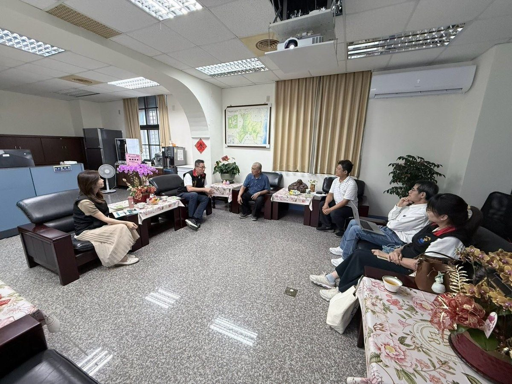

花蓮縣府推地方創生 瑞穗打造低碳慢行廊道

可樂電子報小編/編輯
花蓮縣政府持續推動地方創生，由「花蓮縣地方創生輔導團」深入各鄉鎮市瞭解產業現況與實際需求，協助地方團隊整合資源、研議發展方向。輔導團近期走訪瑞穗鄉公所與在地業者「裡森生態暨苗園」，針對自行車觀光路網、閒置空間活化及原生植物行銷等議題交換意見，希望為瑞穗找到兼顧產業與環境永續的發展路徑。

瑞穗鄉長吳萬德重視地方發展，提出以瑞穗火車站為核心的觀光自行車路網規劃，並與中央環島自行車路網串聯；他同時主張優化單車環境、活化舊老人會館等閒置公有空間，把文旦、蜜香紅茶與溫泉等在地資源整合起來。輔導團隊則研議打造「低碳慢行」觀光廊道，優先聚焦具發展潛力的亮點計畫。

輔導團隊表示，已協助公所盤點資源、調整提案架構並凝聚內部共識，希望提升計畫可行性，進一步爭取中央部會資源支持。團隊強調，地方創生不是一次性活動，而是透過長期陪伴與專業服務，讓提案從願景逐步變成可執行、可長可久的產業行動，也讓在地青年有機會留在家鄉發展。
在地業者「裡森生態暨苗園」負責人江暐凡長期投入野外植物調查、環境教育與臺灣原生種苗培育，團隊並進駐瑞穗生態教育館推廣生態教育。他建議原生植栽以公部門作為優先示範場域，種植花蓮澤蘭等兼具蜜源與觀賞效益的物種，並透過四季花、誘蝶生態法及低養護成本等特色，提升原生種苗的市場辨識度。
輔導團隊建議把選種與維護管理納入公共工程綠化採購的參考規範，讓原生植栽從單點綠美化，延伸為社區產業的穩定出海口。瑞穗擁有豐富的農產、溫泉與生態資源，若能結合低碳旅遊與生態教育，有機會形成具地方特色的綠色產業鏈，讓遊客停留更久、產業收益更穩定。
縣長徐榛蔚勉勵在地團隊掌握產業發展課題，搭配縣府地方創生輔導團提供的專業服務，協助公所與業者整合資源，逐步建立兼顧產業發展與環境永續的模式。她表示，地方的改變需要居民共同參與，縣府會持續陪伴，讓年輕人可以返鄉，長輩也能在熟悉的土地上安心生活。
新聞聯絡人：陳鶴 03-8225701；花蓮好+｜地方創生資訊網：https://hlrr.hl.gov.tw/
🌟 掌握花蓮在地第一手資訊・歡迎訂閱追蹤
深度紀實報導、在地精采影音專題，第一時間接收最新消息！